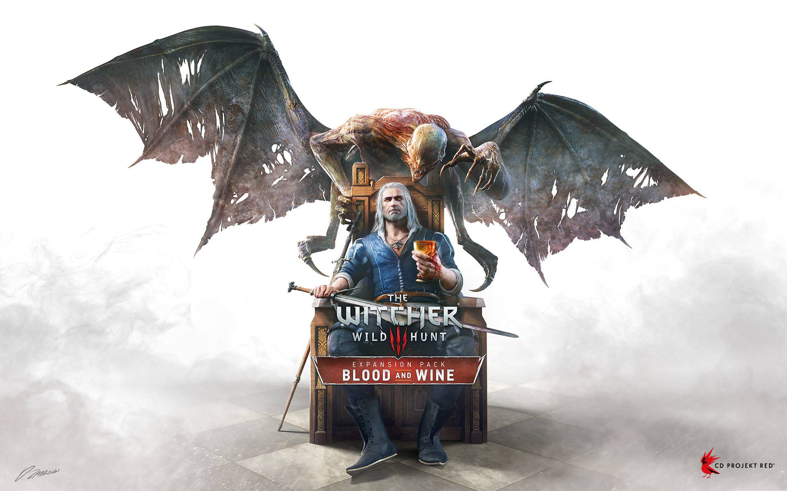

Witcher 3 Blood & Wine
We zijn trots om te melden dat The Witcher 3: Wild Hunt -- Blood and Wine expansion pack een prijs heeft gewonnen voor de Beste Role Playing Game tijdens dit jaar The Game Awards gala in Los Angeles.
“Lang geleden, toen games nog op cd's werden uitgebracht, was het populair om add on discs uit te brengen. Het waren meestal meerdere uren avontuur en het kostte veel werk om het te maken, en er zaten een paar dingen in dat de manier waarop het speeld wordt veranderd.
Toen we aan het bedenken waren hoe een expansion pack eruit zal zien op Witcher 3, Besloten we het zelfde manier van denken terug te brengen,” zei Konrad Tomaszkiewicz, Game Director, CD PROJEKT RED. "Het feit dat onze uitbreiding genomineerd was voor TGA’s Best RPG was goed genoeg; het feit dat het een prijs heeft gewonnen is fantastisch.” voegt Tomaszkiewicz toe.
Twee weken eerder, The Witcher 3: Wild Hunt -- Blood and Wine won ook de prijs voor de beste verhaal en het mooiste design, bij de Golden Joystick Awards, met Doug Cockle, stem van Geralt of Rivia in de Engelse versie van het spel, won de prijs voor Beste Gaming Prestatie. CD PROJEKT RED heeft de titel gekregen voor Studio of the Year.